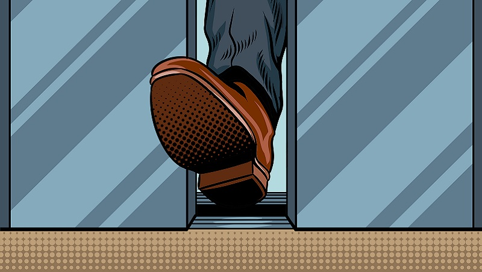

1. 课本书
登门槛效应 - Foot-in-the-door effect
一个朋友在报社当编辑，一天他去请假，他先问领导：“您今天心情好吗？”领导说：“怎么了？”朋友答：“嗯，如果您心情好，我就说件事；心情不好就改天再说。”领导有了兴趣，假，就这样轻易的请好了。不得不说，这位朋友很 会利用“登门槛效应”来处理问题。
心理学家曾做过“登门槛技术”的现场试验他们派人到两个社区，劝人们在屋前立一块“小心驾驶”的圆形标志。在第一个社区，研究人员直接向人们提出要求，结果很多人表示拒绝，接受率仅为17%。在第二个社区，研究人员把同样的事情分成两个步骤：先向大家出示一份赞成安全驾驶的请愿书，请求他们在上面签字，几周后再提出立牌要求，这次接受者竟然达到了55%。
第一个步骤的签字是很容易的，几乎所有人都照做了，大家可能都没意识到，这个小小的“登门槛行为”对接下来的决定产生了重要影响。日常生活中也是这样。当你想要求某人做某件较大的事情，又担心对方不愿意做时，可以先向他/她提出做一件同类型的、比较容易的事。
比如你想与一个女孩谈恋爱，如果一开始就迫切地提出要跟她约会，女孩可能会犹豫，甚至表现得很冷淡；如果你说“饭总是要吃的吧，一起吃饭吧”，她答应了，那接下来是去看电影还是泡酒吧都无所谓了。
你想让同事帮你值班或写报告什么的，直接说八成儿会被拒绝，把事情模糊化，“能不能帮个小忙”，“不会占用你很多时间”，台阶一铺，事情就容易多了……
你可能会说，这些小动作会让人觉得你很狡猾。但是不得不承认，有了这些小动作的帮助，别人的确更愿意接受你的请求。有时候，当你自己认为了不起时，别人通常觉得你这人不过如此；可是当你放低身段时，会缩短与人的距离，别人并不会看不起你，反而会觉得你为人谦虚。实践证明，第二种人得到的总是比第一种人更多。

1.1. 生词
| No. | Word | Meaning |
|---|---|---|
| 1 | 门槛 | ménkǎn - n. threshold |
| 2 | 报社 | bào shè - n. newspaper office, headquarters of a newspaper |
| 3 | 编辑 | biān jí - n. editor |
| 4 | 嗯 | Ǹg - int. used to indicate positive response |
| 5 | 轻易 | qīng yì - adj. easy, effortless |
| 6 | 处理 | chǔ lǐ - v. to handle, to deal with |
| 7 | 社区 | shè qū - n. community |
| 8 | 劝 | quàn - v. to try to persuade |
| 9 | 圆 | yuán - adj. round, circular |
| 10 | 标志 | biāo zhì - n. sign, mark |
| 11 | 出示 | chūshì - v. to show, to produce |
| 12 | 赞成 | zànchéng - v. to agree with, to approve of |
| 13 | 请愿书 | qǐngyuàn shū - n. petition |
| 14 | 恋爱 | liàn ài - n. (romantic) love |
| 15 | 迫切 | pò qiè - adj. urgent, pressing, eager |
| 16 | 犹豫 | yóu yù - adj. hesitant |
| 17 | 冷淡 | lěng dàn - adj. cold, indifferent |
| 18 | 无所谓 | wú suǒ wèi - v. to not care, to not mind, to not take seriously |
| 19 | 值班 | zhíbān - v. to be on duty or shift |
| 20 | 报告 | bào gào - n. report |
| 21 | 八成（儿） | bāchéng (er) - adv. most probably, most likely; 80% |
| 22 | 模糊 | mó hú - adj. blurred, indistinct, vague |
| 23 | 狡猾 | jiǎo huá - adj. crafty, cunning, sly |
| 24 | 了不起 | liǎo bu qǐ - adj. great, amazing |
| 25 | 身段 | shēnduàn - n. posture, manner, attitude |
| 26 | 缩短 | suō duǎn - v. to shorten |
| 27 | 看不起 | kàn bu qǐ - v. to look down upon, to despise |
| 28 | 谦虚 | qiān xū - adj. modest |
| 29 | 实践 | shí jiàn - v. to put into practice |
1.2. 注释
- 嗯
嗯 - 叹词/thán từ
“嗯” (đọc là ńg), biểu thị nghi vấn. Ví dụ:
嗯？不是28号，难道是我记错了？
嗯？人都去哪了？
“嗯” (đọc là ňg), biểu thị cảm thấy bất ngờ hoặc cho rằng không nên như vậy. Ví dụ:
嗯！你的房间为什么这么冷？
嗯！你怎么还没走啊？
“嗯” (đọc là ǹg), biểu thị đáp ứng hoặc chấp thuận. Ví dụ:
嗯，如果您心情好，我就说件事；心情不好就改天再说。
嗯，没问题，我这就给他送去。
- 轻易
“轻易” tính từ, có nghĩa là “简单容易”(đơn giản, dễ dàng) .Thông thường làm trạng ngữ. Ví dụ:
领导有了兴趣，假，就这样轻易地请好了。
任何胜利都不是轻易得到的，背后都要付出艰苦的努力。
“轻易” ,còn có thể làm phó từ, biểu thị thái độ khi xử lí công việc không cẩn thận, rất tùy tiện. Thường dùng trong câu phủ định tạo thành cách thức “轻易不·······” biểu thị ý nghĩa “ 很少（做·······）”（rất ít làm）.Ví dụ:
他这个人的特点，是从不轻易决定，也不轻易转变。
他为人好强，轻易不求人，这次向咱们借钱，一定是遇到什么难事了。
Bài tập:
a) 这条路改为单姓线后，路人就能惊异地过了。
b) A: 把，天这么热，我们怎么不开空调啊？
B: 为了节电节钱，我轻易不用空调。
c) A: 现在骗子越来越多了，这个星期我都接到两个骗人的电话了。
B: 你要小心点，轻易不照做陌生人的要求。
- Phân biệt 轻易 và 容易：
共同点： Khi làm trạng ngữ, đều biểu thị làm không tốn công, khó khăn.
不同点：
| 轻易 | 容易 | |
|---|---|---|
| 1 | Thiên về hành sự thoải mái, không tốn sức lực. Thông thường làm trạng ngữ. 如：她从小学习就好，高考时很轻易地考上了名牌大学，接着又读了研究生。 |
Ngoài biểu thị sự việc rất đơn giản không khó làm, còn biểu thị nội dung sự việc không phức tạp. Có thể độc lập làm vị ngữ. 如：今天的考试特别容易，我半个小时就答完了。 |
| 2 | Không có ý nghĩa này. | Còn biểu thị khả năng xảy ra sự thay đổi nào đó 如：他最近心情不好，容易发脾气 |
| 3 | Còn là phó từ, biểu thị tùy tiện. 如：我爱书，无论走到哪里，我从不轻易放过书摊、书店。 |
Không có cách dùng này. |
1.2. 扩展
问题：行为1
| No. | Word | Meaning |
|---|---|---|
| 1 | 推辞 | tui1ci4 - to decline politely |
| 2 | 议论 | yi4lun4 - discussion |
| 3 | 转告 | zhuan3gao4 - to pass on a message |
| 4 | 祝福 | zhu4fu2 - to bless |
| 5 | 行为 | xing2wei2 - behavior |
| 6 | 握手 | wo4shou3 - to shake hands |
| 7 | 看望 | kan4wang4 - to visit (in hospital) |
| 8 | 问候 | wen2hou4 - to greet |
| 9 | 处理 | chu3li3 - to handle |
| 10 | 恭喜 | gong1xi3 - to congratulate |
| 11 | 宣布 | xuan1bu4 - to announcee |
| 12 | 信任 | xin4ren4 - to trust |
| 13 | 配合 | pei4he2 - to cooperate |
| 14 | 当心 | dang1xin1 - to watch out |
1.4. 运用
我该不该接受/拒绝呢
我认为，在生活中，我们应该学会根据自身情况合理地接受或拒绝别人的要求，既要尊重他人，也要维护自己的权益。
当别人要求我做某事时，我会顺序考虑以下因素：（1）这在我的能力范围内吗？；（2）这对我和他们的关系有什么价值，或者是否实现了我们的共同目标？；（3）这将如何影响我目前正在做的事情或占用我多长时间？。如果遇到一个“不该接受”的答案，我就立刻拒绝。当然，有时这些问题很难立即清楚地回答。但我会尽量不会影响自己，也不会因为接收后做事不到位而让别人失望。
总之，生活中我们会面临着各种各样的请求，是否接受或拒绝这些请求需要根据具体情况进行判断。
🚀Bao nhiêu thơi gian: 多长时间，Làm đến nơi đến chốn: 做到位。
1.5. 口语
- 你觉得帮助别人对你有影响吗？
- 介绍你拒绝别人的一次经历？你觉得自己的处理怎么样？
- 在与人交往中，你处理“接受与拒绝”这类事情的原则是什么？
2. 作业本
2.1. 听力
1. 女：刘先生说周三来换饮水机，问你想要哪个牌子的？
男：没关系，好用就成。
问：男的对这件事的态度怎么样？（B无所谓）
2. 男：中午碰见林教授了，他说找你有事。
女：本来说好了，上午给他送实验报告，结果他临时外出，就没送成。
问：女的为什么没送成报告？（A林教授不在）
3. 男：小李，宣传册是在哪儿印的？有些地方印得比较模糊。
女：那我马上跟对方联系一下，让他们重新印。
问：女的打算让对方怎么做？（C重新印制）
4. 女：别犹豫了，既然房东同意续租，你又没别的合适的，就再住半年吧。
男：也是啊，房租涨得还能接受，也省得再搬了。
问：在租房问题上，男的是怎么想的？（B不想再搬家）
5. 男：昨晚你电话一直占线，你在给谁打电话呢？
女：我朋友小梅，两口子吵着要离，我在电话里一直在劝她要冷静。
问：小梅怎么了？（D要离婚）
6. 男：你做的方案会上通过了吗？
女：我把计划跟他们一说，结果，没一个人赞成。
问：大家认为这个计划怎么样？（A行不通）
7. 男：是小丽来的电话？怎么打这么久
女：是你妹妹，又失恋了。你这当哥哥的也不管。
男：这事我怎么管？你是她嫂子，替我多安慰安慰她。
女：就知道你会这么说。
问：说话的两个人是什么关系？（B夫妻）
8. 女：上次拜访的那家公司有结果了吗
男：联系好几次了，每次约他们刘经理，对我都特冷淡。
女：开始时都这样，光看资料了解还是不够的。
男：是的，我争取能再去给他演示一下。
问：男的接下来想要做什么？（D去演示产品）
9. 女：谢谢你送我回家，你对这里不太熟吧
男：你是奇怪这么近的路我怎么开了这么久吗？
女：是啊，你好像不太认识路似的。
男：如果我对这儿不熟悉，我怎么能开一个多小时的车，而一次也没经过你家的门口呢？
问：从对话中可以知道什么？(B男的故意多绕路)
10. 男：你也认识刘京
女：是啊，我们是高中同学，他学文科，我在理科班。
男：他武术特别棒。
女：没错，上学的时候，他就是武术队的，还得过太极拳比赛的冠军呢。
问：关于刘京，可以知道什么？（C比赛得过冠军）
女：先生，您的车票呢？
男：车票？我没有。
女：没有？那您要去哪儿？
男：我哪儿也不去。
女：那您为什么上这列火车？
男：我在车站遇到这列火车，听到车上的广播大声叫喊：“请大家赶快上车坐好！于是我不得不走进车厢。”
11．关于那位先生，可以知道什么？（D有点儿糊涂）
12．说话时他们最可能在哪儿？（A车厢里面）
我已经暗恋她两年了，可是始终没有勇气向她表白。在朋友的鼓励下，我终于写了一份充满爱意的字条。可是，几次见到她，那只紧握字条的手总是无法从口袋里拿出来。就这样，浪费了好几次机会，字条已变得皱皱巴巴。
终于有一天，不知是哪儿来的勇气，我一见到她，便把那张皱巴巴的字条塞进她手里，然后慌忙逃走了。
第二天，她打来电话，说要跟我见面。我的心情是既兴奋又紧张，昏暗的路灯下我们见面了。她看着紧张不安的我，迫切地问道：“昨天你塞给我一百块钱干吗？”
13．关于这段话中的“我”，下列哪项正确？（C给女孩儿写了求爱字条）
14．从这段话中可以知道什么？（B“我”总是没勇气表白）
2.2. 阅读
2.3. 书写
态度、冷淡、赞成、无所谓、犹豫